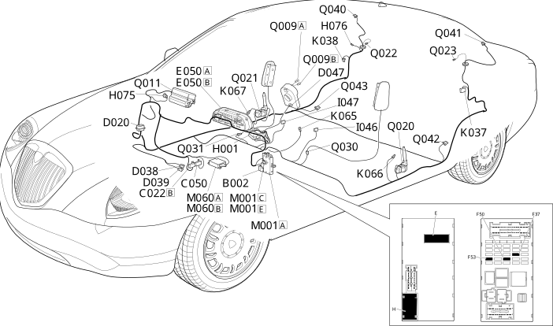

E7030 AIRBAG LOCATION COMPONENTS
- Path
- Electrical equipment > ELECTRICAL FUNCTIONS > E70 VEHICLE ELECTRONIC SYSTEMS > E7030 AIRBAG > E7030 AIRBAG LOCATION COMPONENTS
- Kind
- topic
- Applies to
- all engines; all production periods
- Interactive page
- https://sloeber94.github.io/elrnDB-lThss/en/#/841005962
Applies to: all engines; all production periods
Location Components

Components
Component code | Name | Assembly reference |
|---|---|---|
Junction unit under dashboard | - | |
Centre dashboard earth | - | |
Air Bag system earth | - | |
Side Bag system earth | - | |
- | ||
Rear dashboard coupling for pretensioners/side bag (left), | - | |
Pretensioner/Side Bag (left) rear dashboard coupling | - | |
- | ||
Driver's seat coupling | - | |
Passenger seat coupling | - | |
Instrument panel | - | |
Ignition switch | - | |
Passenger Air Bag disabling switch | 5580C | |
- | ||
I046 | DRIVER'S SEAT BELT SWITCH | - |
I047 | - | |
- | ||
- | ||
5580C | ||
Sensor for passenger Air Bag | 5580C | |
Body computer | - | |
Air Bag control unit | - | |
DRIVER'S AIR BAG | - | |
5580C | ||
7065A | ||
7065A | ||
7065B | ||
Passenger side rear seat belt pretensioner | 7065B | |
Driver's sidebag | 5580C | |
5580C | ||
Driver's Head Bag | 5580C | |
Passenger Head Bag | 5580C | |
5580C | ||
Right rear Air Bag | 5580C |
Topics linked from this page (32)
- B002 Junction unit under dashboard
- C022 Centre dashboard earth
- C050 Air Bag system earth
- C055 Side Bag system earth
- D020 Dashboard/rear coupling
- D038 Rear dashboard coupling for pretensioners/side bag (left),
- D039 Pretensioner/Side Bag (left) rear dashboard coupling
- D047 Clock spring coupling
- D070 Driver's seat coupling
- D071 Passenger seat coupling
- E050 Instrument panel
- H001 Ignition switch
- H075 Passenger Air Bag disabling switch
- H076 Rear Air Bag deactivation
- K037 Sensor for driver's rear side Air Bag
- K038 Sensor for passenger rear side Air Bag
- K066 Sensor for driver's Air Bag
- K067 Sensor for passenger Air Bag
- M001 Body computer
- M060 Air Bag control unit
- Q009 Driver's Air Bag
- Q011 Air Bag in dashboard (passenger side)
- Q020 Driver's front seat belt pretensioner
- Q021 Front passenger seat belt pretensioner
- Q022 Driver's side rear seat belt pretensioner
- Q023 Passenger side rear seat belt pretensioner
- Q030 Driver's sidebag
- Q031 Passenger sidebag
- Q040 Driver's Head Bag
- Q041 Passenger Head Bag
- Q042 Left rear Air Bag
- Q043 Right rear Air Bag